PE reciclado
Procedente de lonas de las fundas de barco del refit. Transformado en plancha por PLASTICPeople.

CUEVA/iPathPASAPORTE DE MATERIAL
Explora una pieza que conecta el plástico recuperado del Puerto con una nueva vida en su infraestructura.
Sin instalar apps. La cámara se activa solo cuando tú lo eliges.
Explorar la historia animada · 50 s ↗ Despertar M-14 en AR ↗01 / COMPOSICIÓN
La plancha de plástico reciclado forma parte de una pieza de infraestructura junto con la capa de hormigón.
Procedente de lonas de las fundas de barco del refit. Transformado en plancha por PLASTICPeople.
Capa superior de la pieza bicomponente. Configuración de proyecto para el formato de plaza.
Dimensiones del proyecto representado, no de la maqueta. La geometría ilustra la composición; no acredita prestaciones estructurales.
02 / TRAZABILIDAD
Recorre las lecturas de M-14 registradas en la prueba de campo. La animación explica el proceso representado por la maqueta.
Repetición de lecturas registradas: no representa el estado en directo del puerto ni prueba que las transformaciones industriales hayan ocurrido.
03 / PROCEDENCIA
Se comprobó la secuencia SHA-256 de las sesiones de origen al preparar esta copia. La ficha pública contiene una selección de datos.
Las lecturas documentan el prototipo del stand. El diseño, el proceso industrial y el posible piloto portuario tienen alcances distintos.
Esta versión no calcula un ahorro de CO₂. Se necesitan viajes, pesos, factores y un escenario de comparación documentados.
Vocabulario propio del demostrador CUEVA. La integridad del registro no constituye certificación del producto.
CONEXIÓN CON EL STAND
04 / CIRCULARIDAD
M-14 es una de las piezas de plaza que, en el proceso del demostrador, se desmonta, pasa a stock y se recoloca.
MIRA MÁS ALLÁ DE LA SUPERFICIE
Abre la cámara, apunta a la tarjeta M-14 y explora sus capas. También puedes usar el visor 3D sin cámara.